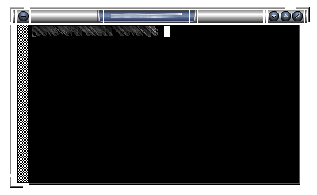
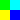
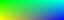

An IceWM theme is made up of these parts:
It should not contain a large backdrop graphic or specify any options not related to its appearance.
Both the theme file(s) and the decoration pixmaps live in a single subdirectory under ICE-LIB/themes, where ICE-LIB is either the IceWM system directory or a users' .icewm directory. Themes then appear in the "Themes" item on the program menu. The default theme on startup is set in the theme file or by the -t option in the command line.
There are several types of theme possible, chosen by setting the "Look" option to one of the values: warp3; warp4; win95; motif; nice; pixmap; metal; gtk. These each give you different levels of control over the appearance and require different numbers of pixmaps. (Actually, pixmap, metal and gtk seem identical.)
In this howto, we will cover the most general pixmap "Look", because other looks generally need a subset of the pixmaps. Look in the system ICE-LIB/themes directory at the basic themes if you want to know how they compare.
Most people use some combination of a paint package - GIMP and xpaint can create xpm files - and a text editor to create and correct pixmaps. If the text editor has configurable syntax highlighting and the pixmaps are smaller than your screen, this is a simple way to work closely on a zoomed preview.
(Hint: pixmaps are quite simple files, really. If you don't know them, try looking at a few: there's a header giving image and palette sizes, then the palette, then the image.)
Pixmap naming is methodical, even if it looks a little unfriendly. Each part of the window is a separate pixmap and the start of the name specifies which part (eg "close" is the close button and "frame" is a window frame section). The next letter is "A" for an active (focussed) window version or "I" for an inactive window. Some parts (frame sections and title bars) then have a character to denote which part it is. Finally, you have ".xpm" on the end.
You can use xpm files with all available features like transparency. This way you can create particulary transparent frames, titles, buttons etc.
Which buttons are prepared in your theme is specified by the TitleButtonsSupported option in the theme file. TitleButtonsLeft and TitleButtonsRight (see preferences file) says which buttons to place where (you can use less buttons than you have under TitleButtonsSupported). The letters are shown after the names. Button file names are simple: close (x), hide (h), maximize and restore (m), menuButton (s), minimize (i), rollup and rolldown (r) or depth (d) and are followed by A.xpm or I.xpm as before. There is one more suffix for button pixmaps only - "O". It specifies pixmap for button when mouse cursor is over this button. For this feature to work you need to set RolloverButtonsSupported=1. Please set your theme's TitleButtonsSupported to include all buttons you have and not more.
Each button has two appearances in a pixmap-look theme: a normal and a pressed version. The pixmaps used are slightly unusual to accommodate this, being twice the size vertically, with the pressed version below the normal one. So, if you are using 16x16 buttons, your pixmaps will be 16x32 and be two pixmaps in one, effectively.
Window frames are "frame" followed by A or I and a location specifier.
Dialogue box frames are "dframe" instead. The locations are fairly logical and same for both frames and dframes:
,TL --------- T -------- TR.
| |
L R
| |
`BL --------- B -------- BR'
(think Top, Bottom, Left and Right)
The title bar is composed of pixmaps, specified as "title", then A or I, then the location:
This is deprecated in icewm 1.2.7
Since late in the 0.9.x series, a two new forms are supported.
If TitleBarCentered=0 the locations are:
,-----------------------.
| L P T M B R |
`-----------------------'
This is deprecated in icewm 1.2.7
or for TitleBarCentered=1:
This can be replaced with option TitleBarJustify=50
Valid pixmaps are now:
,-----------------------.
J L S P T M B R Q
`-----------------------'
where the title text appears on top of the T pixmap (think basic letters Left, Space, Title, Middle, Bulk, Right). Space fills everything between L and P pixmap, same applies for Bulk.
You do not need to define all frames and titles as pixmaps. Instead of this you can use definitions of colors and sizes in default.theme file (then you are defining borders and border colors for frames etc.)
| frame?TL | frame?TL | frame?T | frame?TR | frame?TR | |||||||||||
| frame?TL |
| frame?TR | |||||||||||||
| frame?L | frame?R | ||||||||||||||
| frame?BL | frame?BR | ||||||||||||||
| frame?BL | frame?BL | frame?B | frame?BR | frame?BR | |||||||||||
Where ? is either A or I.
Here is an example of possible Infadel theme frame and title decomposition:
Taskbar in IceWM is also themeable.
You need four pixmaps to change whole taskbar look (the names are self explaining).
taskbarbg.xpm taskbuttonbg.xpm taskbuttonactive.xpm taskbuttonminimized.xpm
You can also change start button.
linux.xpm
and buttons for windows list and show desktop.
windows.xpm showdesktop.xpm (IceWM > 1.2.13)
Pixmaps for taskbar theme needs to be in directory taskbar under your theme directory.
The size of the pixmaps does not matter, but you need to take in mind that only appropriate part will be used. E.g. for taskbarbg.xpm only upper 25 pixels (height of taskbar) will be used from pixmap if single line taskbar. If pixmap is smaller than required size then it will be reproduced on whole area which it should fill.
|
Even more, you can set clock to use pixmap digits. If you want to use pixmap digits you need to put:
a.xpm, colon.xpm, dot.xpm, m.xpm, n0.xpm ... n9.xpm, p.xpm, slash.xpm, space.xpm
into ledclock directory under your theme. Pixmaps height should fit to taskbar.
APM battery status can also use pixmap digits. Except those for clock you can define
percent.xpm
for "%" character. Place it also under ledclock.
Also mailbox icons are themeable. There are five states for this icon.
errmail.xpm, mail.xpm, newmail.xpm, nomail.xpm, unreadmail.xpm
Pixmaps should be 16x16 pixel for now, stored in mailbox subdirectory.
From 1.2.17 IceWM taskbar has collapse button. This button is from 1.2.22 also themeable. Use:
collapse.xpm, expand.xpm
and place them under taskbar directory.
Taskbar height could be changed in two ways. Either increased by making taskbar "linux.xpm" higher (in 1.2.23 it is broken for TaskBarDoubleHeight=0) or by changing SmallIconSize pref. Taskbar is then height to fit icons of that size. Remember that while taskbar height is changed not all taskbar parts are changed accordingly (e.g. monitors).
Very complex themes can also contain their own icons for folder, file or other apps in icons subdirectory. By default 16x16 and 32x32 icons are used. Nameing is just like this:
folder_16x16.xpm for folder icon size 16x16 pixels
folder_32x32.xpm for folder icon size 32x32 pixels
In e.g. menu file then it is enough to say
menu "Mail Agents" folder {
}
and folder icon with appropriate size and name will be used. IceWM also accepts PNG files as icons, but you have to explicitely put the name and/or path (if you do not add path to icons to IconPath pref).
menu Applications "/home/test/my icons/myfolder.png" {
}
The default sizes of icons could be set in prefs with *IconSize options.
Pointers for resize begin with "size" followed by frame part name (e.g. sizeTR.xpm is pointer for resize Top Right). Pointers for scroll begin with "scroll" followed by L, R, U or D (think Left, Right, Up, Down). Cursors are placed in cursors subdirectory.
If you want to use gradients you have to have IceWM compiled with gradient support. Then in theme definition file you simply include line like this:
Gradients="menubg.xpm titleAS.xpm titleAT.xpm titleAB.xpm titleIS.xpm titleIT.xpm titleIB.xpm"
Pixmaps for gradient definition can contains only few pixels. These are defining what colors are used to create gradient. For example this definition (zoomed 1:10):
looks like this when used in titleAS.xpm:
You can use almost any picture, but you have to take in mind that this image will be blured inside e.g. whole S area. (This is difference to non gradient themes - there S images are not blured but placed many times in S area - it fills area like pattern.)
By color settings in preferences you can set color of almost every part of IceWM. You can set colors of Normal, Active, Minimized and Invisible buttons and text colors for same categories of buttons. (Search for Color*TaskBar* options in preferences.)
You can also set colors of monitors and clock background and font.
Colors for frames, taskbar, menu, tooltips, dialogs, listboxes, scrollbars and desktop.
You can combine pixmap and color themeability as you wish.
For details you need to look trought IceWM preference file.
The default.theme file is actually another preferences file, just like ICE-LIB/preferences. There are two options which are customarily put at the top of default.theme, which are
ThemeDescripton="description of theme"
ThemeAuthor="contact details"
and I encourage you to do the same. It can also be useful to add some comments (lines starting with a hash, #) to the top of the file, suggesting other resources (eg backdrops) that you think would go well with the theme.
Your default.theme file should set all options concerning appearance, whether you think they will be used or not. It should not interfere with the configuration of icewm unless it is essential to your appearance. For example, it is not normally OK for a theme to decide to show the TaskBar (this is usually left to the user's preferences file), but a Windows95 lookalike theme would want to show a single-height task bar for sure and set the look of the clock, etc.
If you wish, you can include other .theme files in your theme. These will appear on the optional submenu for your theme (similar to how "Restart" is on the optional submenu of "Logout") and give the user several possible variations on a theme.
For examples you can see preferences file from IceWM package which is pretty self explaining.
When you are ready to test your theme for the first time, you need to cause icewm to rebuild its menus, so that your new theme appears in the "Themes" submenu. You can do this by either restarting icewm, or by changing themes to something else, then you can change to your theme. After changing you theme file, you must do the same.
Change to ICE-LIB/themes and do
tar czvf themename.tar.gz themename
to make a tarball of your theme.
The home for IceWM themes is at box-look.org these days.
The IceWM Theme Creation HOWTO is copyright 1999-2000 MJ Ray and 2003 Adam Pribyl, and may be freely reproduced unaltered but with annotations. The latest version should always be on the IceWM Network. If you wish to improve this document, please send message to covex@ahoj.fsik.cvut.cz.